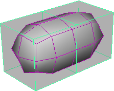
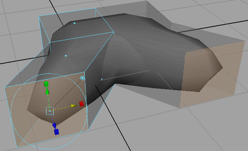

在 Maya 中可以创建具有对称性的多边形模型。对称表示形状沿一条分界线或分界轴两侧对应相同。可能存在很多对称类型。最常见的对称类型是左右对称和径向对称。
在 Maya 中，可以使用以下功能对多边形网格进行对称建模：
- 特殊复制(Duplicate Special)
- 镜像(Mirror)
- 细分曲面代理(Subdiv Proxy)
使用“特殊复制”(Duplicate Special)创建对称网格
“特殊复制”(Duplicate Special)功能可用于使用对象的枢轴点作为参考点沿 X、Y 或 Z 轴复制任何对象。以这种方式复制对象会创建一个完全相同的副本，且该副本独立于原始对象。
使用“特殊复制”(Duplicate Special)功能沿枢轴点镜像多边形网格
- 选择多边形网格，然后选择“编辑 > 特殊复制”(Edit > Duplicate Special) >
 。
。
- 将“平移”(Translate)和“旋转”(Rotate)值设置为 0。
- 将您要沿其镜像多边形网格的轴（X、Y 或 Z）的缩放设置为 -1。
- 单击“特殊复制”(Duplicate Special)。
注：
沿对称轴按比例 -1 缩放对象时，曲面法线将翻转。需要对网格执行其他建模操作时，请记住这一点。可以使用“网格显示 > 反转”(Mesh Display > Reverse)反转法线。
使用“镜像”(Mirror)创建对称网格
如果您已经创建模型的一半并希望创建完全相同的、镜像的另一半，可使用“镜像”(Mirror)功能。将沿镜像选项(Mirror Options)中指定的对称轴复制多边形网格原始的那一半。还可以将复制的多边形网格与原始网格合并以创建一个合并的多边形网格。
使用“镜像”(Mirror)功能沿边界框镜像多边形网格
- 选择多边形，然后选择“网格 > 镜像”(Mesh > Mirror) > 。
- 选择相应设置。
- 单击“镜像”(Mirror)。
使用“切割几何体”(Cut Geometry)以交互方式创建对称网格
可以对多边形网格进行建模，然后使用镜像选项(Mirror Options)中的“切割几何体”(Cut Geometry)功能沿用户定义的对称轴复制该模型。“切割几何体”(Cut Geometry)功能可用于手动定位将沿其复制网格的轴。可以看到在对称轴另一侧“镜像”的已复制网格，然后移动该轴以将两个对象滑动到一起或使其分离，更改相交的形状和位置。可以删除轴和已复制网格，以便沿轴切割原始对象。还可以将复制的网格与原始网格合并以创建一个合并的多边形网格。根据对称轴的位置，“切割几何体”(Cut Geometry)功能会产生有趣的对称效果。
使用“切割几何体”(Cut Geometry)对多边形网格进行对称建模
- 选择多边形网格。
- 选择“网格 > 镜像”(Mesh > Mirror) > 。
- 在“镜像设置”(Mirror Settings)部分中，启用“切割几何体”(Cut Geometry)。如果计划稍后进一步改动对称轴，另请启用“镜像切割平面”(Mirror Cut Plane)。
- 单击“镜像”(Mirror)。
- 使用操纵器调整对称平面。
注：
- 如果将对称平面移动得如此远，以致它遮挡了所有的原始对象，超过了“正边”（剩余的最后一条边），则原始对象及其镜像图像都将消失（各自上的一个面除外）。如果要在正边的方向上镜像对象，请移动对称平面，使其与原始对象相交并将对称平面旋转 180 度。
- 删除对其应用了“镜像切割平面”(Mirror Cut Plane)的对象的历史时，不会删除对称平面。必须手动删除对称平面。
使用“细分曲面代理”(Subdiv Proxy)创建对称网格
“细分曲面代理”(Subdiv Proxy)可用于在修改原始网格的同时预览多边形网格的平滑版本。原始网格显示为部分透明，以便您可以查看下方的平滑版本。启用“细分曲面代理”(Subdiv Proxy)的“镜像行为”(Mirror Behavior)选项后，在您修改多边形网格原始的那一半时，另外一半会同时更新。
使用“细分曲面代理”(Subdiv Proxy)对多边形网格进行对称建模
- 选择多边形网格。

- 选择“网格 > 平滑代理 > 细分曲面代理”(Mesh > Smooth Proxy > Subdiv Prox) > 。
- 在“细分曲面代理选项”窗口中，将“镜像行为”(Mirror Behavior)设置为“完全”(Full)，设置“镜像方向”(Mirror Direction)，然后单击“平滑”(Smooth)。
原始网格将沿“镜像方向”(Mirror Direction)镜像。
 - 修改细分曲面代理的其中一半（例如，使用“编辑网格 > 挤出”(Edit Mesh > Extrude)）。
所做的修改会自动更新到细分曲面代理的另外一半。
- 如果要合并这两部分，请选择“网格 > 平滑代理 > 移除细分曲面代理镜像”(Mesh > Smooth Proxy > Remove Subdiv Proxy Mirror)。

使用“细分曲面代理”(Subdiv Proxy)镜像多边形网格的注意事项
- 镜像仅适用于世界坐标轴。镜像已任意旋转的对象可能会产生意外的结果；有些几何体可能会因此而重叠。
- 如果在对象空间模式下修改细分曲面代理镜像的那一半，则沿一个方向拖动操纵器将在相反方向上修改代理。
- 如果在世界空间模式下修改细分曲面代理镜像的那一半，则沿一个方向拖动操纵器将在相同方向上修改代理。
- 如果在对象空间或世界空间模式下修改细分曲面代理原始的那一半，则沿一个方向拖动操纵器将在相同方向上修改代理。
提示：
使用“网格 > 平滑代理 > 细分曲面代理”(Mesh > Smooth Proxy > Subdiv Proxy)（“镜像行为”(Mirror Behavior)设置为“完全”(Full)）创建对称模型后，使用“网格 > 平滑代理 > 移除细分曲面代理镜像”(Mesh > Smooth Proxy > Remove Subdiv Proxy Mirror)可移除平滑网格。然后再次使用“网格 > 平滑代理 > 细分曲面代理”(Mesh > Smooth Proxy > Subdiv Proxy)（在“镜像行为”(Mirror Behavior)设置为“无”(None)的情况下）创建可通过非对称方式设置动画的平滑网格。